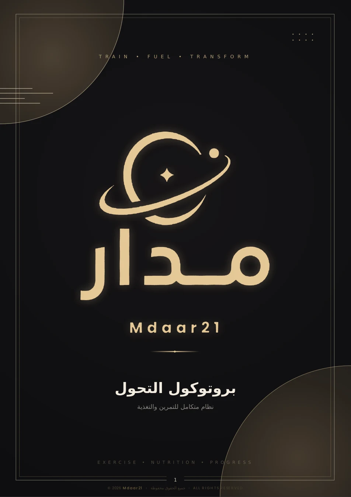
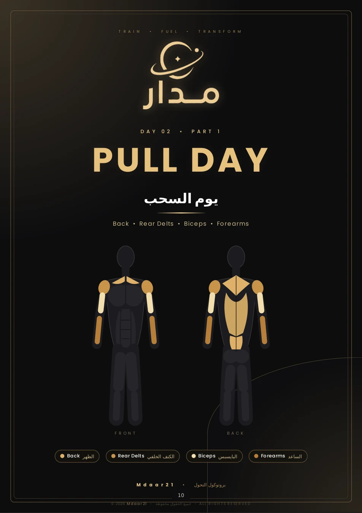
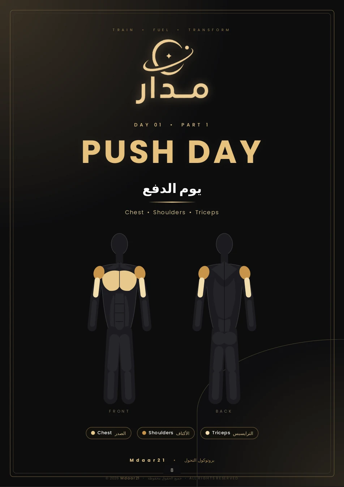
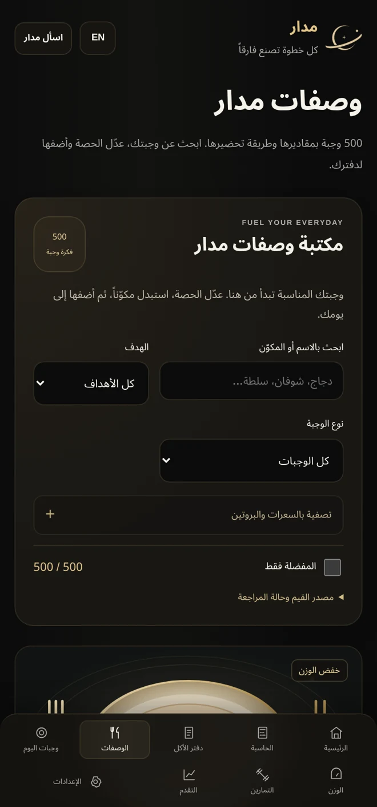

تعرف وش تتمرّن.
برنامجا ٤ و٥ أيام، بتقسيمة واضحة للتمرين والراحة. اختَر اللي يناسب أسبوعك وامشِ عليه.
✦ بروتوكول التحول من مدار
تدريبك مرتب. أدواتك معك. وخطوتك الجاية أوضح.
دليل يجمع لك الأساس، عشان تركّز على رحلتك.
دليل رقمي PDF مصمم لتقرأه وتطبّقه
مو لازم تعرف كل شيء من البداية.
بس تحتاج بداية واضحة.

01 / التفاصيل تصنع الفرق
كل مرة تفتح دليلك، تلقى شيء يساعدك تاخذ الخطوة الجاية. من تقسيمة الأسبوع، إلى تسجيل آخر مجموعة.


برنامجا ٤ و٥ أيام، بتقسيمة واضحة للتمرين والراحة. اختَر اللي يناسب أسبوعك وامشِ عليه.
بطاقات مصوّرة للتمارين والبدائل، مع روابط شرح تفتحها مباشرة من صفحات الكتاب.
سجلات متابعة قابلة للطباعة، وإرشادات للتسخين واختيار الأوزان والراحة والاستشفاء.
دليل ترجع له، مو صفحات تقرأها وتنسى.
MADE TO BE USED.02 / برنامج يناسب إيقاعك
مو كل أسبوع يشبه الثاني. داخل البروتوكول برنامجان، اختَر واحدًا يناسب وقتك والتزامك.

دفع / سحب / أرجل / علوي / سفلي
خمسة أيام تدريب ويومان للراحة، موزعة على دورة أسبوعية واضحة.
البرنامجان داخل ملف واحد. تختار أحدهما لرحلتك.
03 / مدار معك، بعد آخر صفحة
من الدليل إلى جوالك. أدوات مدار تساعدك ترتّب غذاءك، تتابع تمرينك، وتشوف رحلتك بصورة أوضح.
افتح أدوات مدار
لقطات من أدوات مدار الفعلية
04 / البداية أبسط مما تتخيّل
اطّلع على بروتوكول التحول في متجر مدار، وأكمل طلبك من صفحة المنتج.
تعرّف على برنامجي ٤ و٥ أيام، واختَر ما يناسب وقتك ومستواك.
سجّل تمرينك، راجع يومك، وارجع لدليلك كل ما احتجت خطوة أوضح.
✦ خطوتك الأولى، من هنا
بروتوكول التحول من مدار.
دليلك للتدريب، وأدواتك لليوم اللي بعده.
دليل PDF من ٣٤ صفحة يضم برنامجي تدريب ٤ و٥ أيام، بطاقات للتمارين والبدائل وروابط شرح، وإرشادات للتسخين والراحة وسجلات متابعة قابلة للطباعة. تفاصيل الطلب والاستلام في متجر مدار.
برنامج ٤ أيام يقسّم التدريب إلى علوي وسفلي مرتين خلال الأسبوع. برنامج ٥ أيام يشمل الدفع والسحب والأرجل والعلوي والسفلي. البرنامجان موجودان في الدليل، وتختار واحدًا يناسب وقتك وقدرتك على الاستشفاء.
نعم، الملف بصيغة PDF وتقدر تقرأه على الجوال أو الجهاز اللوحي أو الكمبيوتر. وتقدر تطبع سجلات المتابعة إذا تحب تسجّل تمرينك على الورق.
من قسم «أدواتك الرقمية» في هذه الصفحة، اضغط «افتح أدوات مدار». بتلقى الحاسبة ومكتبة الوصفات ودفتر الأكل وأدوات التدريب والمتابعة.
الدليل يوضّح تقسيمة البرامج ويجمع صور التمارين وروابط شرحها. اختَر الأوزان حسب مستواك، واستعن بمدرب لتعلّم الحركات الجديدة. الدليل تعليمي عام، ولا يقدّم برنامجًا علاجيًا أو تقييمًا شخصيًا.